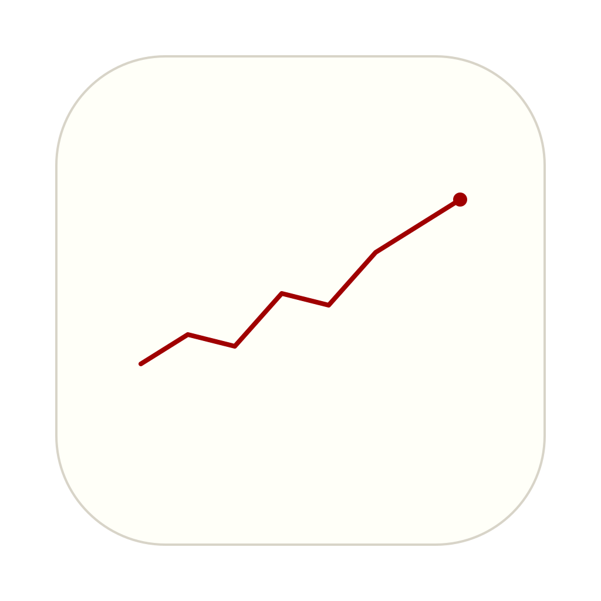

Your email, calendar, Slack, meetings, and more — unified in a quiet macOS app.
Download for MacmacOS 12+ · Apple Silicon (Intel via Rosetta) · Free & open source
Weather, inbox pulse, today's calendar, and AI-ranked priorities at a glance.
Org chart, meeting history, notes, and context for everyone you work with.
Quick notes with @mentions, issue tracking, and AI-powered issue discovery.
Start your day with weather, inbox highlights, calendar overview, and AI-ranked priorities.
Org chart, 1:1 topic tracking, meeting history, and relationship context across all your tools.
Quick capture with @mention linking, priority levels, due dates, and AI-powered issue discovery.
Gmail, Slack, Notion, GitHub, and Google Drive — searchable from one interface.
Gemini-powered priority ranking surfaces what matters most each morning.
Search across emails, notes, meetings, issues, and people instantly.
Gmail, Calendar, Slack, Notion, GitHub, Ramp, Granola, Google Drive, and more.
Navigate everything with keyboard shortcuts. Built for speed.
Download the DMG, drag to Applications, and launch.
Link Gmail, Slack, Notion, and other tools in Settings. All data stays on your Mac.
Open the app each morning for a unified view of your day.
Your data never leaves your Mac. No accounts, no cloud sync, no tracking. Everything is stored locally in SQLite.
Built with FastAPI, React, and pywebview. Styled with Tufte CSS.
Since the app is not signed with an Apple Developer certificate, macOS Gatekeeper will block it on first launch. To open it:
Dashboard.appYou only need to do this once. Alternatively, go to System Settings → Privacy & Security and click Open Anyway.